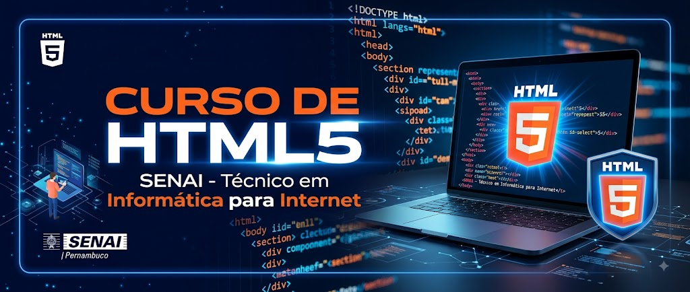

O SENAI Pernambuco (Serviço Nacional de Aprendizagem Industrial) consolidou-se ao longo das décadas como uma das instituições de referência mais importantes para o desenvolvimento econômico e social do estado. Fundado com a missão de qualificar a mão de obra para o setor industrial, o SENAI tem acompanhado de perto as transformações tecnológicas, modernizando constantemente suas metodologias de ensino para atender às demandas de um mercado cada vez mais competitivo e globalizado.
A infraestrutura da instituição é um dos seus grandes diferenciais, contando com uma rede de escolas técnicas e centros de tecnologia estrategicamente distribuídos por polos industriais fundamentais no território pernambucano, como a Região Metropolitana do Recife, o Agreste e o Sertão. Esses espaços são equipados com laboratórios de ponta que simulam o ambiente real das indústrias, permitindo que os estudantes tenham uma experiência prática alinhada às exigências atuais de automação, robótica e manufatura avançada.
O portfólio educacional oferecido é amplo e diversificado, abrangendo desde a aprendizagem industrial para jovens que ingressam no mercado de trabalho até cursos técnicos, qualificação profissional, aperfeiçoamento e graduação tecnológica. Além disso, a instituição destaca-se pela forte atuação na pós-graduação e em programas de extensão, formando profissionais altamente capacitados para ocupar funções estratégicas nos mais variados segmentos produtivos, como metalmecânica, vestuário, alimentos e energias renováveis.
Outro pilar de excelência do SENAI Pernambuco é a sua forte conexão com o setor empresarial por meio de serviços de inovação, consultoria tecnológica e metrologia. Por meio de institutos de tecnologia e laboratórios credenciados, a entidade apoia indústrias de todos os portes no desenvolvimento de novos produtos, na otimização de processos produtivos e na implementação de soluções sustentáveis, impulsionando a competitividade industrial do estado e fomentando o ecossistema de inovação regional.
Dessa forma, o SENAI Pernambuco reafirma cotidianamente o seu compromisso com o futuro da indústria e da sociedade pernambucana, transformando vidas através da educação profissional de excelência. Ao unir tradição, inovação e visão de futuro, a instituição continua a ser um motor indispensável para a geração de empregos qualificados, o fortalecimento da economia e o progresso tecnológico sustentável de toda a região.